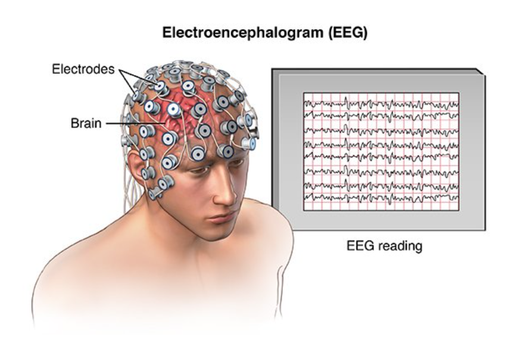
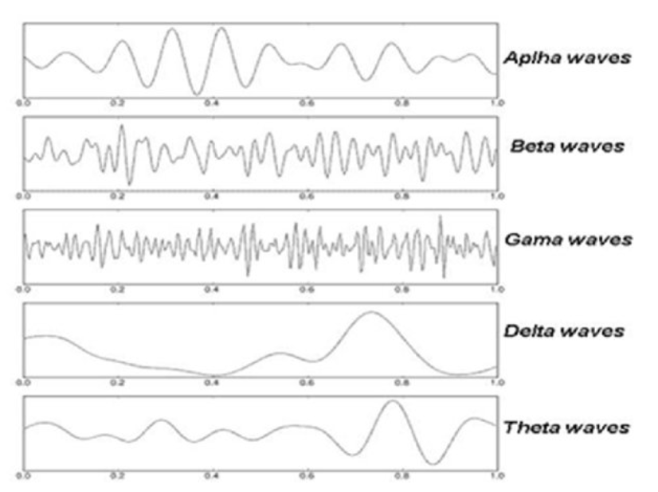
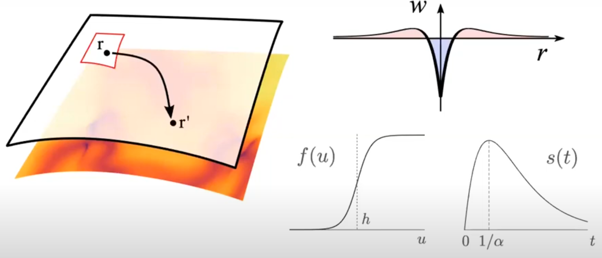
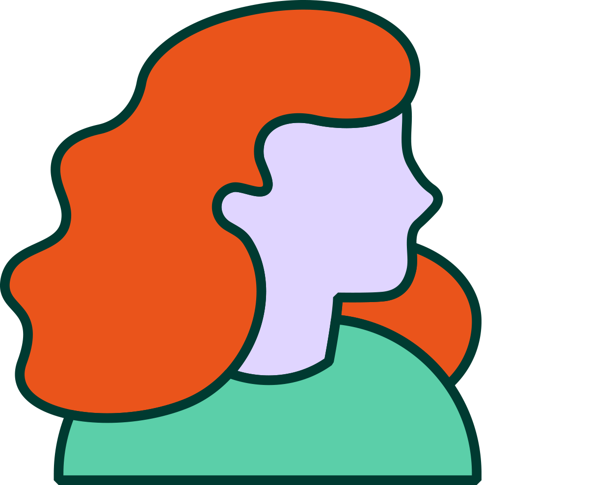

Re-Shaping brain activity: the functional impact of brain morphology
Jonathan J Crofts
Newcastle University
23rd January 2025

Outline
- Introduction and Project Background
- Neural Field Models
- Extensions to Curved Geometries
- Torus
- Rat Brain
- Project Plan
- Year 1: Computational Approaches
- Year 2: Pattern Formation
- Year 3: Evolutionary Brain Dynamics
Motivation
Cortical geometry: why do we care?
Clinical measurements
- Morphological changes including cortical thinning, white and gray matter loss and loss of gyrification are linked to range of age-related diseases
- Modern MRI techniques allow in-vivo measurements specific to morphological changes
Example Brain shape changes associated with cerebral atrophy in Alzheimer’s disease (Blinkouskaya et al. 2021)
The under appreciated role of cortical wave-like patterns
- Better understanding the role of neural patterns in the brain is crucial for a better understanding of cognition (Muller et al., Nat. Rev. Neuro., 2018)
- Travelling waves shown to organise neural processes across space and time (Zhang et al., Neuron, 2018)
- Spiral-like, rotational wave patterns (brain spirals) are widespread during both resting and cognitive task states (Xu et al., Nat Hum. Behav., 2023)
How does geometry constrain function
- Is geometry a more fundamental constraint than interregional connectivity?
- Study by Pang et al suggests dynamics results from excitation of fundamental, resonant modes - derived from the geometry not the connectivity
- This view is fairly controversial!
The study by Pang raises as many questions as answers
- Largely accepted that key insights are provided linking geometry and function (See Luo et al., Trends in Cog. Neuro., 2023)
- However at least two 'critical' commentaries exist to date:
- Patil et al., 2023 warn that the result might be due to statistical overfitting; and
- Faskowitz et al., 2023 further claim the model overlooks topologically complex and long-distance connectivty
The role of long-range connections?
- Deco et al., 2025 emphasises the key role of long-range connections
- A much smaller number of modes are needed when structural connectivity information is included
- These studies still rely on idealised (homogeneous and highly localised) local connectivity rules
- Cortical eigenmodes are derived from the wave equation and so do not include geodesic distances
Where do we come in?
- Three year Leverhulme funded project to study the impact of cortical geometry on brain function
- Team consists of myself, David and Neekar (plus colaborators at Newcastle University)
- Project goals
- Develop novel CAD based methods for solving NFMs efficiently on curved cortical geometries
- Investigate pattern forming in NFMs on curved geometries
- Explore the evolutionary role of brain geometry for brain function
Outline
- Introduction and Project Background
- Neural Field Models
- Extensions to Curved Geometries
- Torus
- Rat Brain
- Project Plan
- Year 1: Computational Approaches
- Year 2: Pattern Formation
- Year 3: Evolutionary Brain Dynamics
Neural Modelling
 - There are approximately 100 billion neurons in the brain with each electrode measuring the average activity of 100s of thousands of neurons
- Brain dynamics commonly modelled using network models of the form
\[ \frac{\mathrm{d}u_i}{\mathrm{d}t} = \frac{1}{\tau_i}\left(-u_i(t) + \sum_{j=1}^N w_{ij} f(u_j(t))\right)\quad i=1,\ldots, N \]
Neural Field Models
In the continuum limit the previously introduced network model becomes
\[ \tau \frac{\partial u(x,t)}{\partial t} = -u(x,t) + \int_{-\infty}^\infty w(x,y)f(u(y,t))\mathrm{d}y \]
Wave Behaviour and Pattern Formation
Complicated patterns have been observed experimentally (Bressloff and Kilpatrick, 2010)
- Spiral waves have been linked to working memory and sensory input
- Spatially localised patterns have been observed in cortical slices
This is related to Turing's work on pattern formation in reaction-diffusion models
Patterns in a 2D NFM
Consider, for example, a 2D model that includes a recovery term and is defined on $[0, L]^2$ with periodic boundary conditions
\[ \begin{align*} \frac{\partial u(x,y,t)}{\partial t}&=A\int_0^L\int_0^Lw(x-x',y-y')f(u(x',y',t)-h)\mathrm{d}x'\mathrm{d}y'\\ &-u(x,y,t)-a(x,y,t)\\ \tau\frac{\partial a(x,y,t)}{\partial t}&= Bu(x,y,t)-a(x,y,t) \end{align*} \]
- The connectivity function takes the form of a wizard's hat
- We can transform to a travelling coordinate system to determine travelling solutions
Solving NFMs on Curved Surfaces
Coombes et al. (Physica D, 2017) solved the following NFM on a sphere
This is the so-called Nunez model
- $\Omega:=S^2$ is the surface of the unit sphere in $\mathbb{R}^3$
- $w(\mathbf{r},\mathbf{r}')$ is the weight distribution, $f$ the firing rate function and $\tau(\mathbf{r},\mathbf{r}')$ specifies distance-dependent delays
- Solutions can be represented by spherical harmonics
- Geodesic distances are known
Geodesic Distances
For a general surface the computation of geodesics reqiures numerical algorithms
A large class of methods are based on formulating the problem in terms of a related PDE on a smooth surface
This typically results in the need to solve the so-called Eikonal equation:
\[ \begin{align*} |\nabla\phi|^2 &= 1\quad \text{on } M\\ \phi &= 0 \quad \text{on } \partial M \end{align*} \]where $\phi:M\longrightarrow \mathbb{R}$ is the distance function
Geodesic Distances
In the current work we deployed the MMP (Mitchell, Mount and Papadimitriou, 1987) algorithm which is implemented in MATLAB within the exact geodesic toolbox
It works by simulating the continuous propagation of a wave front of points equidistant from a source point $s$ until the target $t$ is reached
- Figure shows isolines of the distance function computed using the MMP algorithm
- The algorithm is often referred to as the continuous Dijkstra algorithm
- Often the algorithm runs much faster than the suggested worst case analysis
Torus
- Simplest example of a surface for which analytic geodesics are unavailable
- We parameterise the torus as follows: \[ \left(\theta, \phi\right) \mapsto \left(\begin{array}{c} (R+r\cos{\theta})\cos{\phi}\\(R+r\cos{\theta})\sin{\phi}\\r\sin{\theta} \end{array}\right) = \left(\begin{array}{c}x\\y\\z \end{array}\right) \]
- Here, $R$ and $r$ are respectively the major and minor curvature radii
- We can not use FFTs as we no longer have a convolution integral
To solve our NFM on $\Omega:=\mathbb{T}^2$ we must rewrite it in terms of the above parameterisation
Torus
In the new coordinates the Amari equation becomes
The surface area element for the torus is given by
\[ \mathrm{d}\Omega = r\left(R+r\cos\theta\right)\mathrm{d}\theta\mathrm{d}\phi \]And the connectivity function is taken to have the form
We wish to solve the above NFM numerically...
Torus: Connectivity
- MMP algorithm applied to the Torus
- Wizard hat connectivity kernel
Torus: Solutions
Stationary bump solutions for the Amari equation
Top: trapezoidal (LHS); linear collocation (RHS)
Bottom: linear collocation on an irregular mesh
Travelling Bumps on a Torus
As in the planar case, including a recovery variable enables us to observe travelling bump solutions
As with the 2D planar case, we can study the impact of parameter variation on travelling bump solutions by moving to a travelling coordinate system ...
Travelling Bumps on a Torus
- Solutions to date have been along geodesics moving with constant speed and curvature
- Travelling bumps along non-geodesics:
- travel with variable speed
- are unable to pass through the inner meridian - the region of greatest negative curvature
- Solutions along meridian geodesics pass through the inner equator unhindered
Rat Brain
We next solved the NFM, including a recovery variable, on the cortical surface of the rat brain
- NFM:
\[ \begin{align*} \frac{\partial u(\mathbf{x},t)}{\partial t} &= A\int_\Omega w(\mathbf{x},\mathbf{x}')f(u(\mathbf{x},t)-h)\mathrm{d}\Omega(\mathbf{x}')\\ &-u(\mathbf{x},t)-a(\mathbf{x},t)\\ \frac{\partial a(\mathbf{x},t)}{\partial t} &= Bu(\mathbf{x},t)-a(\mathbf{x},t) \end{align*} \] - Spatial coordinates of the rat cortex were obtained from the CARET software package
- $\Omega$ is the cortical surface $\longrightarrow$
- Discretised system of $N=9623$ ODEs
Note: we solve with linear collocation here...
- Two different types of solution observed
- Solutions travelled along non-geodesic trajectories
- Travelling bumps slow or even divert in regions of negative curvature
- The recent study by Kroos et al, 2015 found brain regions that trapped propagating waves...
- Such regions are potential targets for modulation
Outline
- Introduction and Project Background
- Neural Field Models
- Extensions to Curved Geometries
- Torus
- Rat Brain
- Project Plan
- Year 1: Computational Approaches
- Year 2: Pattern Formation
- Year 3: Evolutionary Brain Dynamics
Year 1: Computational Approaches
Develop isogeometric collocation (IGA-C) methods that use CAD geomerty techniques to accurately solve NFMs on on complex geometries
- NURBS modelling provides a smooth realistic representation of the cortical surface
- IGA-C is a numerical method that deploys the same NURBS basis functions describing the geometry to approximate neural activity
- These methods have been previously applied to models in mechanics and acoustics
- First application within a neuroscience setting

The aim of this package is hello the rertpackage is hello the rertpackage is hello the rertrertpackage is hello the rert
Aim: develop efficient IGA-C scheme for generic connectivity kernels on complex geometries
Year 2: Pattern Formation
Reveal the extent to which curvature impacts solution structure of non-local models by performing a computational bifurcation and stability analysis
- Reveal novel mechanisms underlying pattern formation in curved domains
- We shall consider toy geometries such as the torus for which geodesic distances are unavailable
- Curvature-induced properties (e.g. static Vs moving patterns)
- First application to non-local models on curved domains
The aim of this package is hello the rertpackage is hello the rertpackage is hello the rertrertpackage is hello the rert
Aim: elucidate novel mechanisms for generating patterns
Year 3: Evolutionary Brain Dynamics
Perform model-based studies of complex experiments to determine the effect of the cortical geometry on mechanisms of wave formation, propagation and termination
- How do evolutionary changes in brain shape impact wave dynamics?
- Can we isolate spatial scales that support emergent neural activity patterns of relevance to brain function?
- Investigate the effect of connection heterogeneity on wave propagation in our model, comparing results to an isotropic neural model
The aim of thisTheThe aim of thisThe aim of this aim of thisThe aim of this package is hello the rertpackage is hello the rertpackage is hello the rertrertpackage is hello the rert
Aim: investigate the role of geometry in the evolutionary shaping of brain function
Aknowledgements
Collaborators
& Thank You!
PHD student : Rebecca Martin
References
